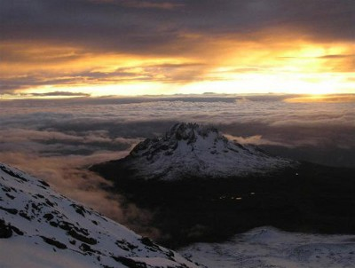

Volcán Kilimanjaro
El Monte Kilimanjaro es un volcán de triple cumbre situado en el
noreste de la República de Tanzania, muy cerca de la frontera con Kenia,
a unos 300 km al sur del ecuador. Es el pico más alto del continente africano
y por lo tanto forma parte del grupo conocido como las 7 cumbres.
Sus tres cimas – Kibo, Mawenzi y Shira – son cráteres de origen volcánico,
siendo el Pico Uhuru en el monte Kibo, el punto más alto con 5.895 metros de altitud.
Otra de sus características notables son los 4.600 m de desnivel existentes desde su base en
el Valle del Rift hasta la cumbre en Uhuru Peak (en el monte Kibo), lo que convierte al Kilimanjaro
en el pico aislado mas alto del mundo y nos regala una de las imágenes más bonitas de África con su
característica estampa cónica de montaña perfecta, visible desde varios cientos de kilómetros a la redonda.
-
Kibo (5.895 m) es un enorme cráter de más 2 km de anchura en cuyo interior se
encuentra Reusch, un segundo cráter de aproximadamente 1,3 km de diámetro. Se considera un volcán
dormido y aun hoy emite fumarolas menores.
-
Mawenzi (5.149 m) es la tercera cumbre más alta de África
y se encuentra a unos 11 kilómetros al Este de Kibo. Su punto más alto es Hans Meyer Point.
-
Shira (3.962 m) es el más antiguo de los tres y en consecuencia el más desgastado.
Se trata de una meseta relativamente plana con los flancos Norte y Este cubiertos de materiales procedentes de Kibo

Historia
Este volcán se localiza a lo largo de un límite de placa divergente, en donde
las placas tectónicas se separan entre sí y donde el magma surge desde las regiones más profundas.
Específicamente, está situado sobre el Rift de África Oriental, una zona de fractura
en donde la placa Africana se está separando paulatinamente en dos placas.
El Kilimanjaro, como hoy se conoce, se formó en dicho límite geológicamente activo,
donde el magma se mueve desde el manto terrestre. Su crecimiento inició hace menos de
1 millón de años, y cesó de hacerlo hace aproximadamente 450,000-300,000 años. Sin embargo,
la formación de todo lo que lo conforma tiene más tiempo. Hace 2.5 millones de años, durante el Plioceno,
Shira comenzó su actividad eruptiva, la cual finalizó hace 1.9 millones de años, y hace apenas 1 millón de años,
Kibo y Mawenzi comenzaron a lanzar materiales del interior de la Tierra. La mayor parte de todo el Kilimanjaro se desarrolló durante el Pleistoceno.
Erupciones
La actividad eruptiva de este volcán pudo comenzar hace 2.5 millones de años en el cono Shira, como se ha mencionado, pero actualmente no se le conoce
ninguna erupción histórica. La actividad está reducida a las fumarolas que escapan del cráter del cono Kibo, lo que ha provocado algunos derrumbes y deslizamientos de tierra.
Según el Observatorio de la Tierra de la NASA, la última erupción del volcán pudo haber tenido lugar hace aproximadamente 100,000 años, pero según el Fondo Mundial para la Naturaleza,
la última gran erupción ocurrió hace unos 360,000 años atrás y la última actividad volcánica de importancia data de hace 200 años.